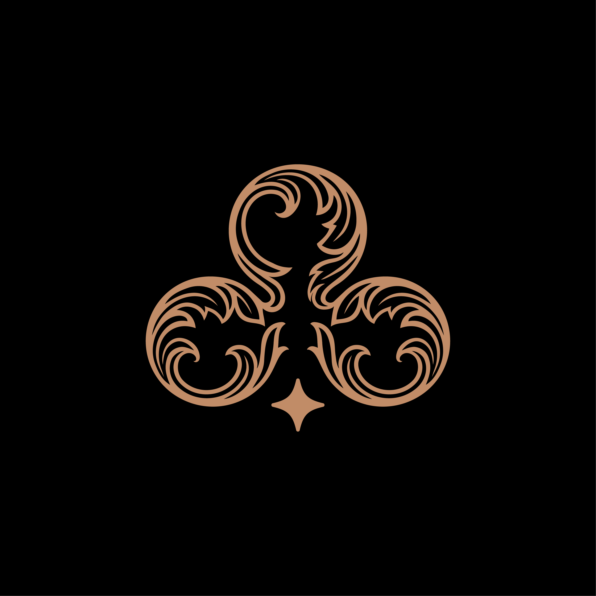
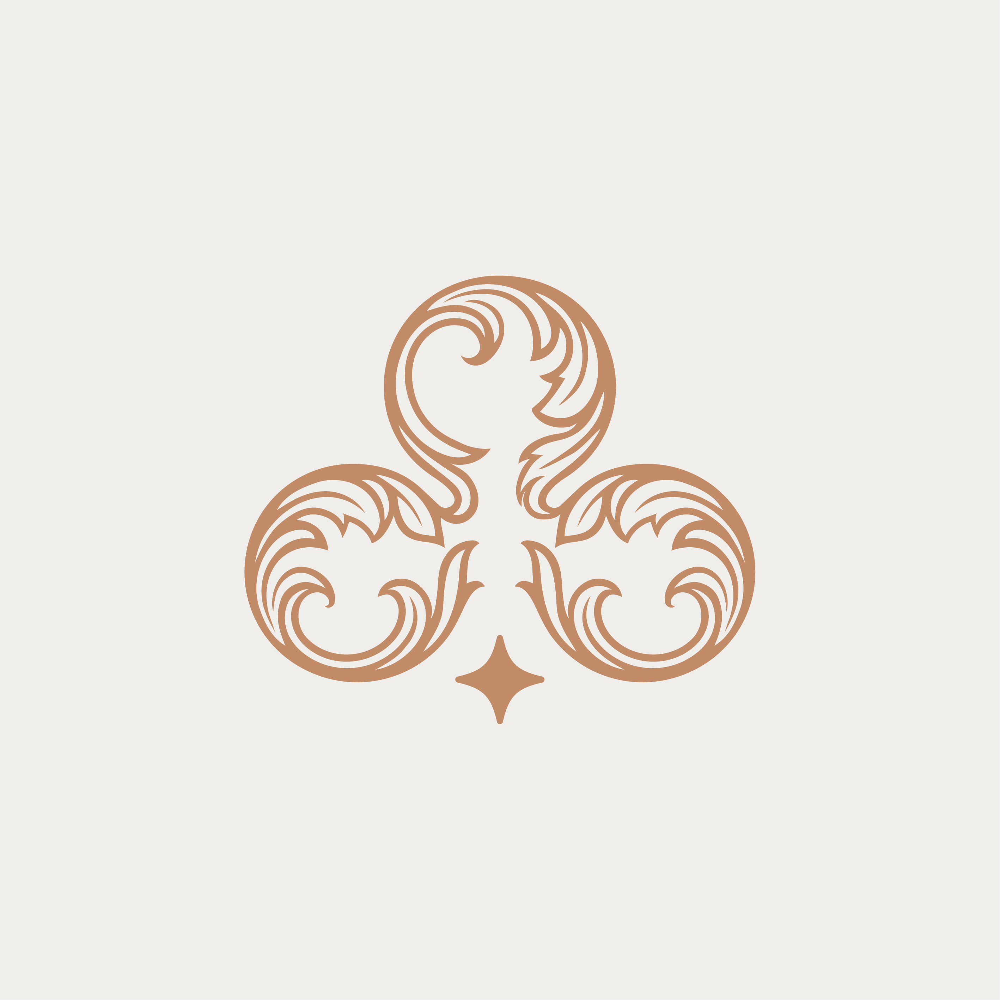
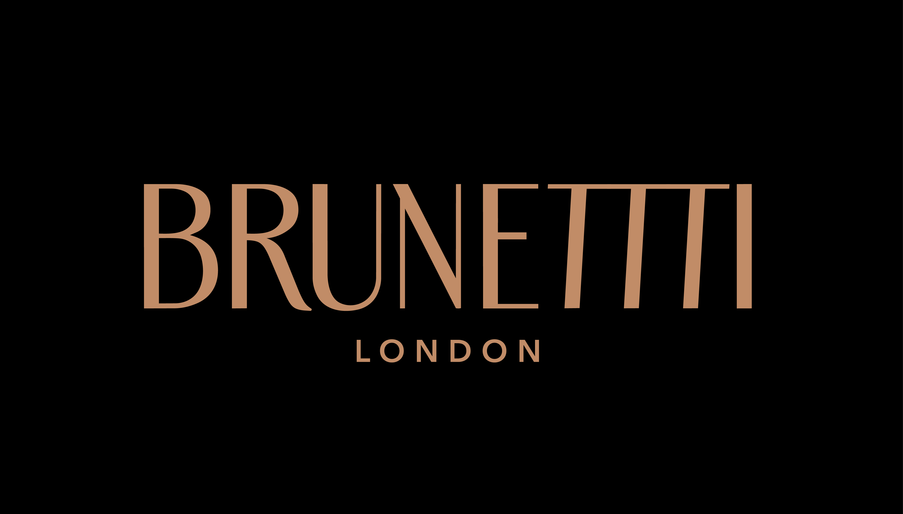
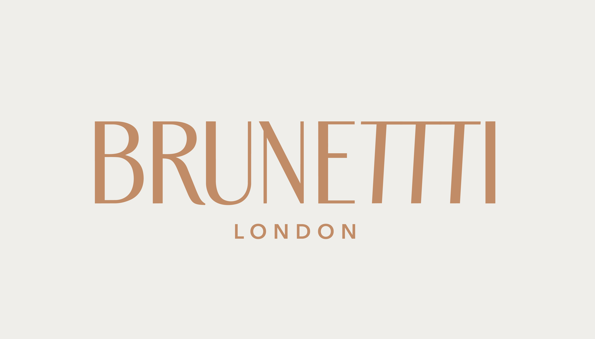

Constructing an elite visual ecosystem, structural logomark geometry, and premium brand layout tokens for the upscale lifestyle fashion circle.
Brunetti is an upscale lifestyle fashion house engineered to fill the space between timeless classical craftsmanship and modular geometric street silhouettes. The label requested an absolute identity rewrite—one capable of conveying an immediate feeling of premium quality, while removing unneeded visual clutter from their communication pipeline.
By stripping down unnecessary aesthetic accents, our design methodology focused on structural purity. The project expanded into creating monogram vectors, testing micro-casing limits, and designing an interactive layout infrastructure optimized across print collateral and mobile lookbooks.
High-end branding requires immediate visibility without loud graphic elements. The challenge lay in formatting a signature layout that keeps absolute design grid parameters scaling flawlessly from physical product tags up to 4K ultra-wide viewport wrappers.
Build a bespoke logomark and system guidelines that operate as a baseline proof of premium quality. The architecture had to immediately drive cognitive trust for buyers, collectors, and stakeholders within seconds of loading the digital storefront.
We instituted an atomic design path: analyzing legacy vector tracking curves, formatting precise margin offsets, mapping typographic baseline hierarchies, and running strict high-contrast visibility audits over diverse physical material textures.


Instrument Serif — Header Core
Kanit / Inter Variable — Interface Grids



